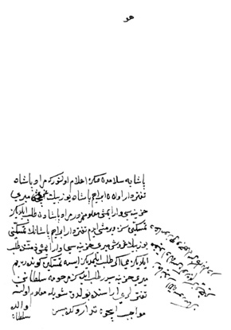

Belge 24: TKSA E.2457/30
Belge 24
“Huwa
Paşaya selâmdan sonra i’lâm olunur ki: Murad Paşa tefterdâr (defterdâr) olan İbrahim Paşa da yüz bin akçe (silinmiş guruş) mîrî hazinesi var imiş ma’lûmumuzdur, Murad Paşa’dan taleb eylediniz, temessükûn size vermiş idim, Tefterdâr İbrahim Paşa’nın temessükünü yüz bin guruş mîrî hazinesi var imiş zimmetinde, taleb eylediniz mi, eğer taleb eylemediniz ise temessükûn göndereyim; mîrî hazinesidir, taleb idesiz, merhume sultanı58 tefterleri arasında bulduk, şöyle ma’lûm oluna, mevâcib içün tedârikde misin? Zamanıdır, Allâh’ı severseniz, mukayyed olasız, göreyim sizi, hayr du’âmız her vechile sizinledir.
Vâlide Sultan”
Özet:
Vâlide sultanın veziriâzama emri: Defterdâr İbrahim Paşa zimmetinde mîrîye (devlet hazinesine) ait yüz bin guruşun hazineye alınması emrediliyor. Belge altında “Vâlide Sultan” imzası var.
Yorum:
Belge, Vâlide Sultan imzasıyla doğrudan veziriâzama gönderilen bir emirdir. Vâlide, Kösem veya Turhan’a ait olabilir. Yazı Kösem’e ait yazılara benzer. Defterdâr’ı Tefterdar diye yazar. Baş-defterdâr İbrahim adıyla iki kişi bilinmektedir: Hacı lakabıyla III. Murad ve III. Mehmed dönemi baş- defterdârlarında; ikincisi şeytan veya melek unvanıyla bilinen IV. Mehmed dönemi baş-defterdâr 1676’da Şam beylerbeyi. Belgede adı geçen bu şeytan, İbrahim Paşa olmalıdır. Beylerbeyi olmadan önce baş-defterdâr olmalı.
58 Vâlide Sultan.